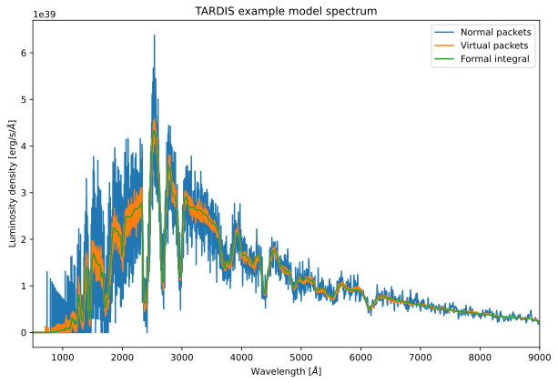
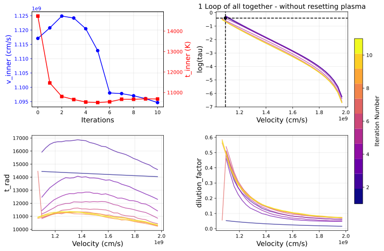

You can interact with this notebook online: Launch notebook
Workflow to solve v_inner boundary¶
The source code for this workflow can be found at: https://github.com/tardis-sn/tardis/blob/master/tardis/workflows/v_inner_solver.py.
This workflow demonstrates how to use the TARDIS modules to perform targeted tasks. This workflow is built on top of the SimpleTARDISWorkflow to solve the v_inner boundary, in addition to the remaining radiative properties.
[1]:
import numpy as np
import matplotlib as mpl
import matplotlib.pyplot as plt
from astropy import units as u
[2]:
from tardis.workflows.v_inner_solver import InnerVelocitySolverWorkflow
from tardis.io.configuration.config_reader import Configuration
/home/runner/work/tardis/tardis/tardis/__init__.py:17: UserWarning: Astropy is already imported externally. Astropy should be imported after TARDIS.
warnings.warn(
Initializing tabulator and plotly panel extensions for widgets to work
Auto-detected Jupyter notebook environment
Initializing panel with ipywidgets comms for Jupyter notebook
Auto-detected Jupyter notebook environment
Initializing panel with ipywidgets comms for Jupyter notebook
[3]:
config = Configuration.from_yaml('../tardis_example.yml')
This code modifies the TARDIS example configuration to include convergence information for the inner boundary velocity solver.
[4]:
config.montecarlo.convergence_strategy['v_inner_boundary'] = {
'damping_constant' : 0.5,
'threshold' : 0.01,
'type' : 'damped',
'store_iteration_properties' : True
}
config.montecarlo.convergence_strategy.stop_if_converged = True
config.model.structure.velocity.start = 5000 * u.km/u.s # Decrease start velocity from 11000 km/s in example file, to search over a wider range
config.model.structure.velocity.num = 50 # Increase number of shells from 20 in example file, to provide more granularity
workflow = InnerVelocitySolverWorkflow(
config, tau=2.0/3,
mean_optical_depth="rosseland"
)
[5]:
workflow.run()
| Shell No. | t_rad | next_t_rad | w | next_w |
|---|---|---|---|---|
| 0 | 1.44e+04 K | 1.59e+04 K | 0.0531 | 0.486 |
| 5 | 1.44e+04 K | 1.66e+04 K | 0.0407 | 0.214 |
| 10 | 1.43e+04 K | 1.68e+04 K | 0.0323 | 0.125 |
| 15 | 1.42e+04 K | 1.63e+04 K | 0.0262 | 0.0918 |
| 20 | 1.42e+04 K | 1.57e+04 K | 0.0217 | 0.0755 |
| 25 | 1.41e+04 K | 1.5e+04 K | 0.0183 | 0.0669 |
| Shell No. | t_rad | next_t_rad | w | next_w |
|---|---|---|---|---|
| 0 | 1.59e+04 K | 1.25e+04 K | 0.486 | 0.458 |
| 5 | 1.66e+04 K | 1.38e+04 K | 0.214 | 0.158 |
| 10 | 1.68e+04 K | 1.39e+04 K | 0.125 | 0.0934 |
| 15 | 1.63e+04 K | 1.38e+04 K | 0.0918 | 0.0658 |
| 20 | 1.57e+04 K | 1.34e+04 K | 0.0755 | 0.0551 |
| 25 | 1.5e+04 K | 1.29e+04 K | 0.0669 | 0.0481 |
| Shell No. | t_rad | next_t_rad | w | next_w |
|---|---|---|---|---|
| 0 | 1.25e+04 K | 1.14e+04 K | 0.458 | 0.511 |
| 5 | 1.38e+04 K | 1.26e+04 K | 0.158 | 0.194 |
| 10 | 1.39e+04 K | 1.29e+04 K | 0.0934 | 0.109 |
| 15 | 1.38e+04 K | 1.28e+04 K | 0.0658 | 0.0744 |
| 20 | 1.34e+04 K | 1.25e+04 K | 0.0551 | 0.0606 |
| 25 | 1.29e+04 K | 1.19e+04 K | 0.0481 | 0.0548 |
| Shell No. | t_rad | next_t_rad | w | next_w |
|---|---|---|---|---|
| 0 | 1.14e+04 K | 1.12e+04 K | 0.511 | 0.504 |
| 5 | 1.26e+04 K | 1.19e+04 K | 0.194 | 0.222 |
| 10 | 1.29e+04 K | 1.21e+04 K | 0.109 | 0.132 |
| 15 | 1.28e+04 K | 1.21e+04 K | 0.0744 | 0.0908 |
| 20 | 1.25e+04 K | 1.19e+04 K | 0.0606 | 0.072 |
| 25 | 1.19e+04 K | 1.14e+04 K | 0.0548 | 0.0649 |
| Shell No. | t_rad | next_t_rad | w | next_w |
|---|---|---|---|---|
| 0 | 1.12e+04 K | 1.09e+04 K | 0.504 | 0.529 |
| 5 | 1.19e+04 K | 1.15e+04 K | 0.222 | 0.232 |
| 10 | 1.21e+04 K | 1.17e+04 K | 0.132 | 0.139 |
| 15 | 1.21e+04 K | 1.16e+04 K | 0.0908 | 0.101 |
| 20 | 1.19e+04 K | 1.13e+04 K | 0.072 | 0.0824 |
| 25 | 1.14e+04 K | 1.09e+04 K | 0.0649 | 0.0717 |
| Shell No. | t_rad | next_t_rad | w | next_w |
|---|---|---|---|---|
| 0 | 1.09e+04 K | 1.09e+04 K | 0.529 | 0.507 |
| 5 | 1.15e+04 K | 1.12e+04 K | 0.232 | 0.237 |
| 10 | 1.17e+04 K | 1.13e+04 K | 0.139 | 0.151 |
| 15 | 1.16e+04 K | 1.12e+04 K | 0.101 | 0.108 |
| 20 | 1.13e+04 K | 1.1e+04 K | 0.0824 | 0.087 |
| 25 | 1.09e+04 K | 1.06e+04 K | 0.0717 | 0.0775 |
| Shell No. | t_rad | next_t_rad | w | next_w |
|---|---|---|---|---|
| 0 | 1.45e+04 K | 1.09e+04 K | 0.0563 | 0.56 |
| 5 | 1.13e+04 K | 1.12e+04 K | 0.263 | 0.256 |
| 10 | 1.13e+04 K | 1.12e+04 K | 0.16 | 0.16 |
| 15 | 1.13e+04 K | 1.11e+04 K | 0.112 | 0.114 |
| 20 | 1.1e+04 K | 1.08e+04 K | 0.0908 | 0.0942 |
| 25 | 1.07e+04 K | 1.05e+04 K | 0.0797 | 0.08 |
| 30 | 1.03e+04 K | 1.03e+04 K | 0.0733 | 0.0713 |
| Shell No. | t_rad | next_t_rad | w | next_w |
|---|---|---|---|---|
| 0 | 1.09e+04 K | 1.09e+04 K | 0.56 | 0.578 |
| 5 | 1.12e+04 K | 1.12e+04 K | 0.256 | 0.263 |
| 10 | 1.12e+04 K | 1.13e+04 K | 0.16 | 0.161 |
| 15 | 1.11e+04 K | 1.11e+04 K | 0.114 | 0.118 |
| 20 | 1.08e+04 K | 1.09e+04 K | 0.0942 | 0.0969 |
| 25 | 1.05e+04 K | 1.06e+04 K | 0.08 | 0.0818 |
| 30 | 1.03e+04 K | 1.03e+04 K | 0.0713 | 0.0734 |
| Shell No. | t_rad | next_t_rad | w | next_w |
|---|---|---|---|---|
| 0 | 1.09e+04 K | 1.1e+04 K | 0.578 | 0.562 |
| 5 | 1.12e+04 K | 1.13e+04 K | 0.263 | 0.256 |
| 10 | 1.13e+04 K | 1.14e+04 K | 0.161 | 0.156 |
| 15 | 1.11e+04 K | 1.12e+04 K | 0.118 | 0.118 |
| 20 | 1.09e+04 K | 1.09e+04 K | 0.0969 | 0.0953 |
| 25 | 1.06e+04 K | 1.06e+04 K | 0.0818 | 0.081 |
| 30 | 1.03e+04 K | 1.03e+04 K | 0.0734 | 0.0724 |
| Shell No. | t_rad | next_t_rad | w | next_w |
|---|---|---|---|---|
| 0 | 1.1e+04 K | 1.09e+04 K | 0.562 | 0.579 |
| 5 | 1.13e+04 K | 1.14e+04 K | 0.256 | 0.254 |
| 10 | 1.14e+04 K | 1.14e+04 K | 0.156 | 0.157 |
| 15 | 1.12e+04 K | 1.12e+04 K | 0.118 | 0.117 |
| 20 | 1.09e+04 K | 1.09e+04 K | 0.0953 | 0.0962 |
| 25 | 1.06e+04 K | 1.06e+04 K | 0.081 | 0.0813 |
| 30 | 1.03e+04 K | 1.03e+04 K | 0.0724 | 0.0725 |
Plot the spectrum¶
[6]:
spectrum = workflow.spectrum_solver.spectrum_real_packets
spectrum_virtual = workflow.spectrum_solver.spectrum_virtual_packets
spectrum_integrated = workflow.spectrum_solver.spectrum_integrated
[7]:
%matplotlib inline
plt.figure(figsize=(10, 6.5))
spectrum.plot(label="Normal packets")
spectrum_virtual.plot(label="Virtual packets")
spectrum_integrated.plot(label='Formal integral')
plt.xlim(500, 9000)
plt.title("TARDIS example model spectrum")
plt.xlabel(r"Wavelength [$\AA$]")
plt.ylabel(r"Luminosity density [erg/s/$\AA$]")
plt.legend()
plt.show()

Plot the convergence process¶
[8]:
%matplotlib inline
# extract plasma states
t_rad = workflow.iterations_t_rad
t_inner = workflow.iterations_t_inner
w = workflow.iterations_w
taus = workflow.iterations_mean_optical_depth
v_inner = workflow.iterations_v_inner_boundary
# remove all nans, or rows where all values are nan
t_rad = t_rad[~np.all(np.isnan(t_rad), axis=1)]
t_inner = t_inner[~np.isnan(t_inner)]
w = w[~np.all(np.isnan(w), axis=1)]
taus = taus[~np.all(np.isnan(taus), axis=1)]
v_inner = v_inner[~np.isnan(v_inner)]
# initialize figure
fig,axes = plt.subplots(2,2,figsize=(12,8))
plt.subplots_adjust(wspace=0.4,hspace=0.3)
# get the raw velocity grid
vel = workflow.simulation_state.geometry.v_inner
# pick a colormap for the iterations
cmap = plt.get_cmap('plasma',taus.shape[0])
# plot v inner change
v_inner_plot = axes[0,0]
v_inner_plot.plot(v_inner,marker="o",color="b")
v_inner_plot.set_xlabel("Iterations", fontsize=14)
v_inner_plot.set_ylabel("v_inner (cm/s)", fontsize=14)
v_inner_plot.grid(alpha=0.3)
v_inner_plot.tick_params(axis='y', colors='blue')
v_inner_plot.yaxis.label.set_color('blue')
# plot t inner change in same subplot
t_inner_plot = axes[0][0].twinx()
t_inner_plot.plot(t_inner,marker="s",color="r")
t_inner_plot.set_ylabel("t_inner (K)", fontsize=14)
t_inner_plot.tick_params(axis='y', colors='red')
t_inner_plot.yaxis.label.set_color('red')
# plot the tau change
tau_plot = axes[0][1]
for i, tau in enumerate(taus):
tau_plot.plot(vel[-len(tau):], tau, color=cmap(i/taus.shape[0]),label=f"itr {i+1}",alpha=0.7)
tau_plot.scatter(workflow.simulation_state.v_inner_boundary.value, np.log(2.0 / 3.0), color="k",marker="o")
tau_plot.axhline(np.log(2.0 / 3.0), color='black', linestyle='--')
tau_plot.axvline(workflow.simulation_state.v_inner_boundary.value, color='k', linestyle='--')
tau_plot.set_xlabel("Velocity (cm/s)", fontsize=14)
tau_plot.set_ylabel("log(tau)", fontsize=14)
tau_plot.grid(alpha=0.3)
tau_plot.set_title("1 Loop of all together - without resetting plasma", fontsize=14)
# plot t radiative change
t_rad_plot = axes[1][0]
for i in range(len(taus)):
t_rad_plot.plot(vel[-len(t_rad[i]):], t_rad[i],color=cmap(i/taus.shape[0]),label=f"itr {i+1}",alpha=0.7)
t_rad_plot.set_xlabel("Velocity (cm/s)", fontsize=14)
t_rad_plot.set_ylabel("t_rad", fontsize=14)
t_rad_plot.grid(alpha=0.3)
# plot dilution factor change
w_plot = axes[1][1]
for i in range(len(taus)):
w_plot.plot(vel[-len(w[i]):], w[i],color=cmap(i/taus.shape[0]),label=f"itr {i+1}",alpha=0.7)
w_plot.set_xlabel("Velocity (cm/s)", fontsize=14)
w_plot.set_ylabel("dilution_factor", fontsize=14)
w_plot.grid(alpha=0.3)
# add colorbar for iteration number
norm = mpl.colors.Normalize(vmin=1, vmax=len(taus))
sm = mpl.cm.ScalarMappable(cmap=cmap, norm=norm)
cbar = fig.colorbar(sm, ax=axes, orientation='vertical', fraction=0.025, pad=0.02)
cbar.set_label('Iteration Number', fontsize=12)
